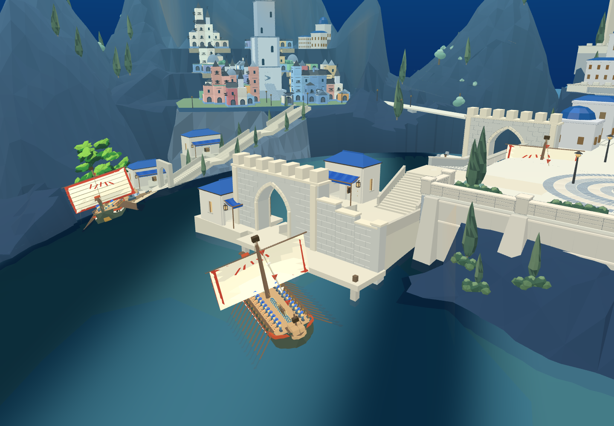
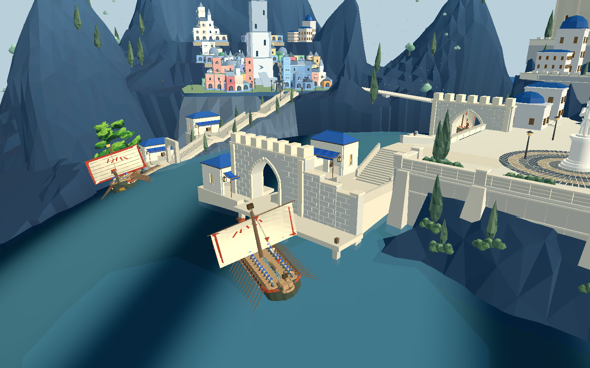
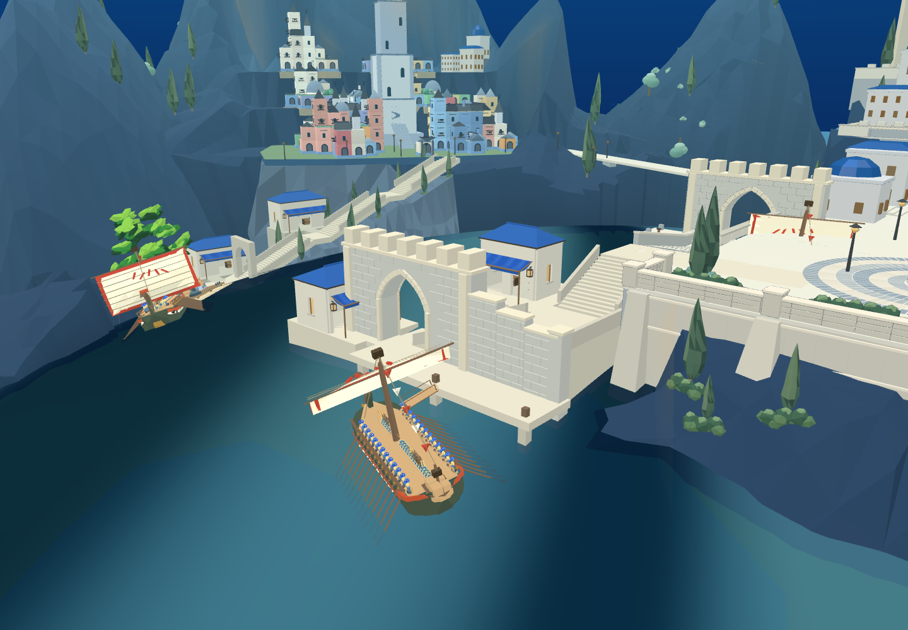

原 ocean-warship-0 已调为前港驻泊船，船员、武器、船体均沿用原资产；旧港剧情船和另外两艘巡航船保留。
进入原游戏：到前港临水岸台，靠近船位按 F 上船，WASD 驾驶，F 下船。仍在泊位附近时下船返回岸台；驶离后停在离船处，不会瞬移回巡航线。这沿用原交互，不是已做成步行登船动画。


Godot 替换原快照同名船槽，没有重复添加同一艘船。原生驾驶尚未迁移。

实际跳板铰点与泊位公式已一致。但旧板展开过程仍有船内干涉，正式驻泊船保持收板，不能把此图当已完成卸载。已有 Blender 水平伸缩板候选待继续。
三种原士兵在收帆后两侧甲板共198个上身/装备位置检查：短剑、弓箭各66点无交叉；长矛66点中1点在船头索具附近交叉。脚步、转身和整队卸载未通过；蓝帆与目标图视觉仍待完成。